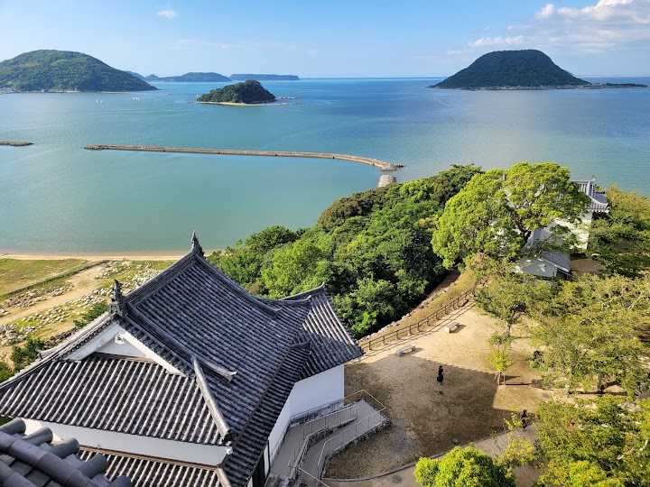
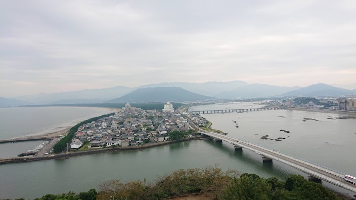
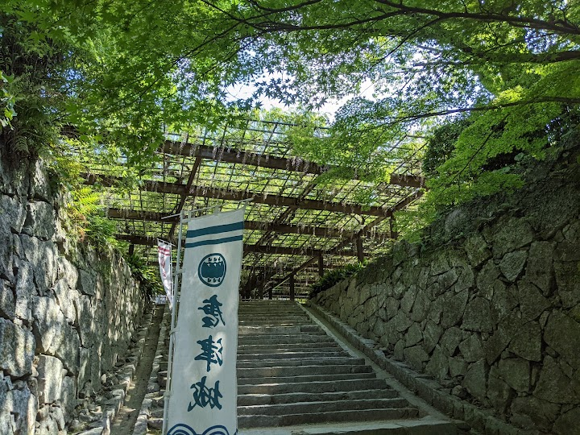
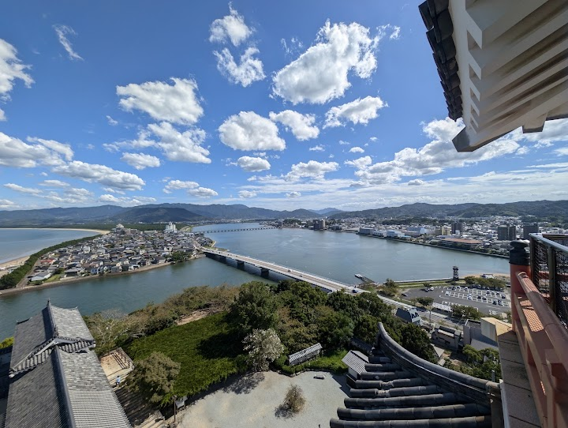
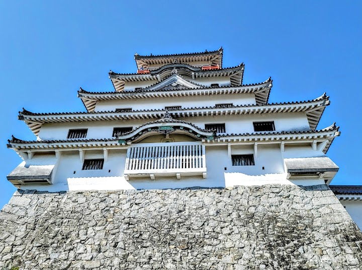

Karatsu Castle (suggested)
Karatsu Castle, also called Maizuru (Dancing Crane) Castle, was first completed in 1607 and the keep has been reconstructed. It stands on a hill beside the sea and offers tours of the keep and sweeping views over Karatsu Bay and the pine-lined shore; one visitor says it exceeded their expectations of Japanese castles.
Open in Google Maps (street view, more photos and reviews there)






Visitor tips on finding it and getting there
Beautiful park with a pretty castle. Good view from the top. Take around 5-10 minutes to hike up the stairs to reach the castle. There’s also a paid elevator behind the stairs.